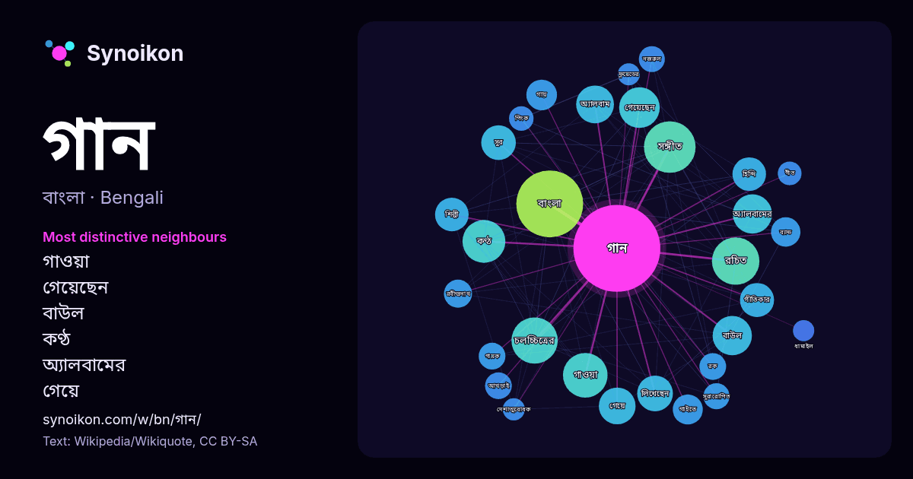

বাংলা · আজকের শব্দের তালিকা
গান
“song” · উইকিপিডিয়া, Wikiquote থেকে 1770টি প্রয়োগে এর চারপাশে পাওয়া শব্দ।

সবচেয়ে স্বতন্ত্র প্রতিবেশী
- গাওয়া 35×
- গেয়েছেন 34×
- বাউল 33×
- কণ্ঠ 32×
- অ্যালবামের 30×
- গেয়ে 30×
- গায় 23×
- গীতিকার 23×
- বাংলা 22×
- সঙ্গীত 21×
- গাইতে 21×
- সুর 20×
- রচিত 19×
- আখড়াই 19×
- অ্যালবাম 18×
- সুরারোপিত 18×
- রবীন্দ্রনাথ 15×
- হিন্দি 15×
- লিখেছেন 15×
- পিংক 15×
× = সাধারণ উইকিপিডিয়া টেক্সটের চেয়ে কত গুণ বেশি।
সবচেয়ে ঘন ঘন প্রতিবেশী
- বাংলা 119
- সঙ্গীত 71
- সালের 66
- রচিত 60
- চলচ্চিত্রের 57
- গাওয়া 53
- কণ্ঠ 49
- জনপ্রিয় 48
- গেয়েছেন 44
- অ্যালবামের 41
- বাউল 41
- কথা 40
- অ্যালবাম 38
- একক 36
- গেয়ে 36
- ভাষায় 36
- পায় 34
- মুক্তি 34
- লিখেছেন 34
- মূলত 33
প্রসঙ্গে
- বহনযোগ্য আধুনিক যন্ত্রে সংরক্ষণ করছেন। গানগুলো ইন্টারনেট থেকে বিনামূল্যে কিংবা ক্রয় করে সংগ্রহ করা যায়। ডিজিটাল মাধ্যমে গান সংগ্রহ ও দেয়া-নেয়ার মাধ্যমে বর্তমান Wikipedia snippets · সঙ্গীত
- ভাঙার গান’ বাংলাদেশের জাতীয় কবি কাজী নজরুল ইসলাম রচিত বিদ্রোহাত্মক কাব্যগ্রন্থ। এটি প্রকাশিত হয় ১৯২৪ সালের আগস্ট মাসে (১৩৩১ বঙ্গাব্দের শ্রাবণে)। ১১ Wikipedia snippets · ভাঙার গান
- উইলিয়াম বিলি গান (ইংরেজি: William Gunn; জন্ম: ৪ ডিসেম্বর, ১৮৫৮ - মৃত্যু: ২৯ জানুয়ারি, ১৯২১) নটিংহামের সেন্ট অ্যান্স এলাকায় জন্মগ্রহণকারী বিখ্যাত ইংরেজ Wikipedia snippets · উইলিয়াম গান
- মাইজভান্ডারী গান মাইজভান্ডারী ধারার অনুসারীদের গাওয়া মরমী গান। এ ধারার প্রবর্তক গাউসুল আজম হযরত মাওলানা শাহ সুফি সৈয়দ আহমদ উল্লাহ মাইজভান্ডারী ও হযরত Wikipedia snippets · মাইজভান্ডারি গান
- "হাই হোপ্স" ব্রিটিশ রক ব্যান্ড পিংক ফ্লয়েডের একটি গান। এটি তাদের ১৯৯৪ সালের দ্য ডিভিশন বেল অ্যালবামের দ্বিতীয় একক এবং সর্বশেষ ট্র্যাক হিসাবে ১৯৯৪ সালের Wikipedia snippets · হাই হোপ্স (পিংক ফ্লয়েডের গান)
- ধামাইল গান ও ধামাইল নাচ বাংলাদেশের ময়মনসিংহ এবং সিলেট অঞ্চলের বিশেষ করে সুনামগঞ্জে প্রচলিত একজাতীয় কাহিনী সংবলিত মূলত নারীদের আচারকেন্দ্রীক বাংলা লোকগান Wikipedia snippets · ধামাইল
- একুশের গান একটি বাংলা গান যা 'আমার ভাইয়ের রক্তে রাঙানো' হিসেবে সুপরিচিত (প্রথম চরণ দ্বারা)। এই গানের কথায় ১৯৫২ সালের ফেব্রুয়ারি ২১ তারিখে সংঘটিত বাংলা Wikipedia snippets · একুশের গান
- হয়। এসব গানের মূল উপাদান রহস্যবাদ। তবে কিছু কিছু মারফতী গানে রহস্যবাদ একটু শিথিল। মা'রফত শব্দটি যদি অর্থের দিক থেকে নেই তাহলে সঠিক ভাবে মারফতী গান কি তা Wikipedia snippets · মারফতী গান
আরও শব্দ
- অরণ্য
- আয়না
- ইতিহাস
- ঈশ্বর
- কাজ
- কুকুর
- ক্ষমতা
- খাদ্য
- গ্রীষ্ম
- ঘড়ি
- ঘণ্টা
- ঘোড়া
- ছায়া
- জননী
- জলবায়ু
- জীবন
- ঝড়
- টাকা
- ট্রেন
- দারুচিনি
- দ্বীপ
- নক্ষত্র
- নীরবতা
- পরিবার
- পানি
- পাহাড়
- প্রকৃতি
- বাগান
- বিজ্ঞান
- বিড়াল
- বৃষ্টি
- ভাষা
- মধু
- মরুভূমি
- মানচিত্র
- মৃত্যু
- রাস্তা
- রুটি
- লবণ
- শরৎ
- শহর
- শিল্প
- শীত
- সত্য
- সময়
- সেতু
- সোনা
- স্বাস্থ্য
- হৃদয়
2026-10-09 তারিখে ডিফল্ট সেটিংসে (±5 শব্দ, মাঝারি কর্পাস) আগে থেকে গণনা করা। ইন্টারঅ্যাক্টিভ মানচিত্র লাইভ ডেটা দিয়ে এটি হালনাগাদ করতে পারে।
যন্ত্রে অনূদিত ইন্টারফেস; সংশোধন স্বাগত।